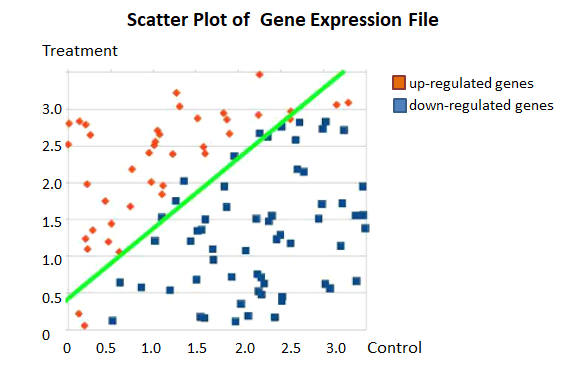

Oh My Genes¶
Software Requirements Specification Version1.0¶
Group members:¶
- Huang Anbei (201632120104)
- Liang Yufang (201632120106)
Indices and tables¶
- 1.Introduction
- 1.1Purpose
- 1.2 Scope
- 1.3 User characteristics
- 1.4 Overview
- 1.5 Glossaries
- System Definitions
- 2.1 Source and Background of the Project
- 2.2 Goal of the Project
- 2.3 Structure of the System
- Running Environment
- 3.1 Network Environment
- 3.2 Hardware Environment
- 3.3 Software Environment
- 4.Functional requirements
- 4.1 Input
- 4.2 Output
- 4.2.1 Table
- 4.2.2 Scatter plot
- 5.Non-functional Requirements
- 5.1 Interface Requirement
- 5.2 Response Time Requirement
- 5.3 Aesthetic Requirement
- 5.4 Reliability Requirement
- 5.5 System Security Requirement
- 6.Constraints
- 6.1 Algorithm Accuracy Constraint
- 6.2 Web Space Constraint
- 6.3 Budget Constraint
- 6.4 System Downtime
7.Change Cases
8.Milestones
- 9.Appendices
- 9.1 Summary Report
- 9.2 Change Log
10.References
1. Introduction¶
1.1 Purpose¶
This document describes the design Little Hill Lab’s initial requirements for an online application (Oh My Genes) which allows our scientists to upload gene expression files and quickly get differentially expressed genes, including the demand in function and performance.
The main purpose is identifying differentially expressed genes given a gene expression file containing two cell samples.
1.2 Scope¶
This document is to derive a logical model of objective system from the one of current system, and answer the question of “what to do” of this project .In this document, development techniques are not involved. The document is mainly to describe user’s requirement by modeling, to build a communication bridge for clients, users, and developers.
1.3 User Characteristics¶
End-user - Biologists who do some research about genetic analysis.
Website maintainers - workers who do website maintenance and development.
1.4 Overview¶
The web application has a simple interface with a single button [Upload and GO]. Our scientists upload a plain text file containing gene expression levels from two samples, representing two experimental conditions. Accepting the file, the software will return a table of differentially expressed genes and a scatter plot of these genes whose X-axis is control and Y-axis is treatment. If an invalid gene expression is given, the web application returns a page informing the user to provide the correct format.
1.5 Glossaries¶
- Control sample - a cell sample prepared in its normal condition.
- Treatment sample - a cell sample treated by special chemicals, or in which some genes are altered.
- Differentially expressed genes - the genes which have significantly different expression levels between two samples.
- Up-regulation - a gene is said to be up-regulated if it has higher expression in treatment than in control.
- logFC- log fold change of gene expression. log_2 [T/C], where T is the gene expression level from a treatment sample, while C is the gene expression level from a control sample.
2. System Definitions¶
2.1 Source and Background¶
Gene identification is an important branch of bioinformatics, which uses biology experiment or computer identification methods such as DNA sequences on the biological characteristics of fragments.
This project is an online application developed for Little Hill Laboratory for Optimal Life. The Little Hill Lab’s need an online application which allows their scientists to upload gene expression files and quickly get differentially expressed genes. So the Lab needs an application to identify differentially expressed genes given a gene expression file containing two cell samples.
2.2 Goal of the Project¶
- Friendly user interface
- High efficiency
- Good extensibility
2.3 Structure of the System¶
Based on the descriptions of users, the system should be one parts: clients. This client is to provide function like upload a text file, result. Their relations are described in Fig.1.
The scientists upload a plain text file containing gene expression levels from two samples, representing two experimental conditions. Accepting the file, the software will return a table of differentially expressed genes and a scatter plot of these genes whose X-axis is control and Y-axis is treatment. If an invalid gene expression is given, the web application returns a page informing the user to provide the correct format.
3. Running Environment¶
The running environment of this project includes hardware environment, software environment and network environment.
3.1 Network Environment¶
Both the users in client side and web site maintainers in management side can access this system through network. The web has an independent host, independent IP and independent domain name.
3.1 Network Environment¶
Both the users in client side and web site maintainers in management side can access this system through network. The web has an independent host, independent IP and independent domain name.
3.2 Hardware Environment¶
- Client: PC
CPU: P4 1.8 GHZ
Memory: 256 MB above
- Web server
CPU: P4 1.8GHz
Memory: 256 MB above
- Database server
CPU: P4 1.8GHz
Memory: 256 MB above
3.3 Software Environment¶
Operating system: Windows, Mac (Pre - OS X), Linux
Database: SQL Server
Developing toolkit: JDK Version
Web Server: Tomcat
Flask: python
Browser: IE5+, NS4+, Mozilla Firefox, Opera, Safari
4. Functional requirements¶
4.1 Input¶
A valid submitted gene expression file has the following format:
- It is a TAB-delimited, plain text file with three columns (see the attached file for a full example).
- The file contains an optional head line, followed by each gene’s expression in a control sample (e.g., ControlSample) and in a treatment sample (e.g.KnockOutSample).
| gene_id | ControlSample | KnockOutSample |
|---|---|---|
| AT1G01010 | 1.198558083 | 2.036161827 |
| AT1G01020 | 13.75736234 | 13.370796 |
| AT1G01030 | 0.833779536 | 0.203616183 |
| AT1G01040 | 9.58846466 | 7.126566394 |
| AT1G01046 | 0 | 0 |
| AT1G01050 | 23.81482799 | 21.10821094 |
| AT1G01060 | 0.625334652 | 1.221697096 |
| AT1G01070 | 1.719670292 | 0.950208853 |
| AT1G01080 | 28.34850421 | 25.24840665 |
| AT1G01090 | 58.26034505 | 42.96301455 |
| AT1G01100 | 1066.508249 | 1308.030358 |
| AT1G01110 | 2.709783491 | 1.425313279 |
4.2 Output¶
The web application displays a table and a scatter plot given a gene expression file.
4.2.1 Table¶
The table contains a list of differentially expressed genes with the following format:
| gene_id | control_sample | treat_sample | log_2[FC] |
|---|---|---|---|
| AT1G01010 | 1.198558083 | 2.036161827 | 0.76 |
4.2.2 Scatter plot¶
The scatter plot displays differentially expressed genes. The X-axis is Control, and Y-axis is Treatment. (fig.2)
Replace ‘Control’ and ‘Treatment’ with appropriated column names if provided in the uploaded file. The up-regulated genes are shown in red dots, and down-regulated genes are shown in blue.
5. Non-functional Requirements¶
5.1 Interface Requirement¶
- Page contents: Topic-prominent, the form of website definition, terms and passage should universal, standard and explicit.
- Navigation structure: the page should have an explicit navigation direction for user’s convenient.
- Technical environment: The page can be displayed by all kinds of browser in different resolution; No error links and null links; The layout of page are processed by CSS.
- Artistic style: Clean interface; Rational layout; Right front size; Harmonious color.
5.2 Response Time Requirement¶
The response time of web will be affected by the server thread processing power and the client sends a request number and the related content, content depends on the processing time and complexity.
Thus the response time of this web should be controlled less than 5 seconds.
5.3 Aesthetic Requirement¶
The page should not only be easy to use, but also be as clear as possible. Because good integrity of page will make users browse in a good mood and also receive information more easily. At the same time, it will improve the image of the site.
5.4 Reliability Requirement¶
System to be able to provide 24 hours a day, 7 days a week uninterrupted operational capability and to ensure access to the peak of the system can do work and fast response.
5.5 System Security Requirement¶
The system has a strict authority management function. Prevent that legal users operate over authority, illegal user attack viciously.
The CSCI requirements related to prevent potential danger to personnel, property and environment or reduce such risk to the lowest possible, including to prevent accidental action (like nonlocal “automatic navigation off” command) and invalid action (security measures that CSCI must provide when send a want “automatic navigation closing failed”).
6. Constraints¶
6.1 Algorithm Accuracy Constraint¶
After users upload a plain text file containing gene expression levels from two samples, the form and scatter diagram that system returned should be as accurate as possible. But there are minor errors in the process of handling large amounts of data. Providing users with accurate results is an important constraint.
6.2 Web Space Constraint¶
The web space is limited and it should keep enough space to ensure normal operation, so the application should be controlled less than 1GB.
6.3 Budget Constraint¶
Due to the limited sources of funds, development process of project will be slow down. So the budget should be controlled less than 10,000 USD.
6.4 System Downtime¶
The system downtime should less than 30 minutes per year to avoid causing problems in the analysis process of the users and causing economic losses of website.
7. Change Cases¶
- The system will be developed with greater compatibility.
- It will get more investment to increase the budget, and get more support from different teams, so that there will be more powerful technical force to maintain website development.
- There will be more functions in the system, just like users can communicate, discus problems and share information to others.
- Algorithm accuracy of data will be higher.
8. Milestones¶
- User Requirements Document: 3 April 2018
- Requirements Q&A and elicitation: 10 April 2018
- Software Requirements Specification: 17 April 2018
- Acceptance test: 1 June 2018
- Deployment date: 15 June 2018
9. Appendices¶
9.1 Summary Report¶
Overall, the document also includes the basic information structure of system by words and illustrations. This SRS incorporates the most recent version of most of the requirements. It shows the function requirements and non-functional requirements that help readers know the project better. What’s more, we illustrate the related operations, how the system deals with data that users upload and does response and also made a scatter plot to explain operation mechanism more simply and clearly.
However, we did find there to be some areas where requirements for requested features had been omitted or incomplete. A few requirements that arose from the negotiations failed to appear in the document, but overall the requirements are shaping nicely.
We found some constraints in many ways, and according to these we put forward some change cases that maybe will be realized.
In a word, we try to find issues and provide further information on the features we require for the system.
9.2 Change Log¶
| Time | Change_Log |
|---|---|
| April 26th | Make general framework and content of project |
| April 27th | Adding function and non-function requirements |
| April 28th | Setting constraints of project |
| April 30th | Writing summary report |